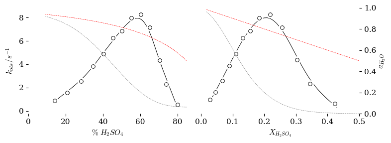

A Plot of \(k_{obs}\) vs. \(\%H_2SO_4\) or \(H_0\)#
This code will create the figure 2 in the discussion that plots \(k_{obs}\) vs. \(\% H_2SO_4\) and \(\log{k_{obs}}\) vs \(0.62H_0\)
###################################################
### Create Interpolation Function for H0 from %H2SO4
###################################################
### This function below could be in an external library that you call in your own program.
def MakeInterpolationFunctionForH0inH2SO4byPercentWt():
Data_File_Name = "02_H0_H2SO4_Tickle_1970.csv"
import pandas as pd
pd.options.mode.chained_assignment = None # no warning message and no exception is raised
import numpy as np
from scipy.interpolate import make_smoothing_spline # A function for interpolating a plot using a Bspline algorithm. Returns an interpolation function.
#github_location = "https://raw.githubusercontent.com/blinkletter/4410PythonNotebooks/main/Class_30/data/"
github_location = "./data/"
Filename = github_location + Data_File_Name
df = pd.read_csv(Filename,
delimiter = ",",
skipinitialspace=True,
comment = "#")
x = df["%H2SO4"]
y = df["H0"]
interpolation = make_smoothing_spline(x, y, ### The x and y data
w=None, ### A list of weights for each point (default = None)
lam=0.1) ### A factor for the degree of smoothing. Change this to change the smoothness.
return(interpolation)
###################################################
### call the function to create an interpolator for activity H2O in H2SO4
###################################################
interpolator = MakeInterpolationFunctionForH0inH2SO4byPercentWt()
###################################################
### An example of using the inerpolation function that you just created
###################################################
percentH2SO4 = 100
H0Value = interpolator(percentH2SO4)
#print(f"The H0 in {percentH2SO4}% H2SO4 is {H0Value:0.3f}")
##############################################################
### Set up libraries and global variables
##############################################################
import pandas as pd
pd.options.mode.chained_assignment = None # no warning message and no exception is raised
import numpy as np
import matplotlib.pyplot as plt
import scipy.stats as stats
from scipy.optimize import curve_fit
from scipy.stats import linregress
from statsmodels.nonparametric.smoothers_lowess import lowess # A function for interpolating a plot using the locally weighed scatterplot smoothing method. Returns smoothed x,y points
from scipy.interpolate import CubicSpline # A function for interpolating a plot using the cubic spline method. Returns an interpolation function.
from scipy.interpolate import interp1d # A function for interpolating a plot using the connect-the-dots method. Returns an interpolation function.
from scipy.interpolate import make_smoothing_spline # A function for interpolating a plot using a Bspline algorithm. Returns an interpolation function.
from matplotlib.patches import PathPatch
from matplotlib.path import Path
#github_location = "https://raw.githubusercontent.com/blinkletter/4410PythonNotebooks/main/Class_30/data/"
github_location = "./data/"
github_H0_location = "https://raw.githubusercontent.com/blinkletter/4410PythonNotebooks/main/Class_08/data/H0_data/"
github_location_styles = "https://raw.githubusercontent.com/blinkletter/LFER-QSAR/main/styles/"
github_location_LFER_tables = "https://raw.githubusercontent.com/blinkletter/LFER-QSAR/main/data/"
molwtH2SO4 = 98.08
molwtH2O = 18.0
densityH2SO4 = 1.83
densityH2O = 1.000
### interpolation = interp1d(x1, y1, kind='linear')
### interpolation = CubicSpline(x1, y1)
### interpolation = scipy.interpolate.make_smoothing_spline(x1, y1, w=None, lam=0.03)
##############################################################
### Import the data and perform calculations
##############################################################
Data_File_Name = "Yates_Table1.csv"
Filename = github_location + Data_File_Name
df = pd.read_csv(Filename,
delimiter = ",",
skipinitialspace=True,
# index_col="Substituent",
comment = "#")
#display(df)
df1 = (df.loc[df['Ester'] == 'MeOAc']) ### Select only the MeOAc data
##############################################################
### Perform calculations
##############################################################
df1["kobs"] = df1["kobs"] * 1E-2 * 60 # convert from 10^-2 min^-1 to s^-1
PercentH2SO4 = df1["%H2SO4"]
molesH2SO4 = PercentH2SO4 / molwtH2SO4
PercentH2O = 100 - PercentH2SO4
molesH2O = PercentH2O / molwtH2O
total_moles = molesH2SO4 + molesH2O
mole_fraction_H2SO4 = molesH2SO4 / total_moles
df1["X_H2SO4"] = mole_fraction_H2SO4
interpolator = MakeInterpolationFunctionForH0inH2SO4byPercentWt()
df1["H0"] = interpolator(df1["%H2SO4"])
m = 0.62
df1["HS"] = df1["H0"] * m
df1["log_k_obs"] = np.log10(df1["kobs"])
display(df1.head(3))
| Ester | %H2SO4 | kobs | X_H2SO4 | H0 | HS | log_k_obs | |
|---|---|---|---|---|---|---|---|
| 0 | MeOAc | 14.1 | 0.900 | 0.029243 | -0.597414 | -0.370397 | -0.045757 |
| 1 | MeOAc | 20.7 | 1.566 | 0.045716 | -1.040195 | -0.644921 | 0.194792 |
| 2 | MeOAc | 28.3 | 2.532 | 0.067544 | -1.509841 | -0.936101 | 0.403464 |
Data_File_Name = "01_Giauque_Table9_activityH2OinH2SO4.csv"
##############################################################
### Import the data
##############################################################
Filename = github_location + Data_File_Name
df2 = pd.read_csv(Filename,
delimiter = ",",
skipinitialspace=True,
# index_col="Substituent",
comment = "#")
#display(df1)
##############################################################
### Perform calculations
##############################################################
molal = df2["conc H2SO4 / m"]
mass_add_to_1_kg_water = molal * molwtH2SO4
total_mass_solution = mass_add_to_1_kg_water + 1000
percent_H2SO4 = mass_add_to_1_kg_water / total_mass_solution * 100
df2["%H2SO4"] = percent_H2SO4
df2["X_H2SO4"] = molal / (molal + 1000/molwtH2O)
interpolator = MakeInterpolationFunctionForH0inH2SO4byPercentWt()
df2["H0"] = interpolator(df2["%H2SO4"])
m = 0.62
df2["HS"] = df2["H0"] * m
display(df2.tail(3))
| conc H2SO4 / m | a_H2O | gamma_H2SO4 | %H2SO4 | X_H2SO4 | H0 | HS | |
|---|---|---|---|---|---|---|---|
| 33 | 400 | 7.870000e-06 | 2.19 | 97.514416 | 0.878049 | -10.124079 | -6.276929 |
| 34 | 500 | 5.200000e-06 | 1.78 | 98.001599 | 0.900000 | -10.220340 | -6.336611 |
| 35 | 1000 | 1.500000e-07 | 0.92 | 98.990715 | 0.947368 | -10.415807 | -6.457800 |
###################################################
### Get the data
###################################################
x = df1["%H2SO4"]
y = df1["kobs"]
x1 = df1["X_H2SO4"]
y1 = df1["kobs"]
###################################################
### Interpolate the data
###################################################
### Using a smoothing interpolation function that returns a Bspline function
xs = x
ys = y
if True:
y_lowess = lowess(y, x,
frac=0.43,
it=0,
delta=0.0,
xvals=None,
is_sorted=False,
missing='drop',
return_sorted=True)
xs = y_lowess[:,0]
ys = y_lowess[:,1]
interpolation = make_smoothing_spline(xs, ys, ### The x and y data
w=None, ### A list of weights for each point (default = None)
lam=0.5) ### A factor for the degree of smoothing. Change this to change the smoothness.
step = 0.01
x_smooth = np.arange(np.min(x), np.max(x)+step, step)
y_smooth = interpolation(x_smooth)
interpolation1 = make_smoothing_spline(x1, y1, ### The x and y data
w=None, ### A list of weights for each point (default = None)
lam=0.00003) ### A factor for the degree of smoothing. Change this to change the smoothness.
step = 0.01
x1_smooth = np.arange(np.min(x1), np.max(x1)+step, step)
y1_smooth = interpolation1(x1_smooth)
###################################################
### Set up labels for plots
###################################################
x_label = "$\%~{H_2SO_4}$"
y_label = "$k_{obs} / s^{-1}$"
x1_label = "$X_{H_2SO_4}$"
y1_label = ""
#y1_label = "$\log{(k_{obs} / s^{-1})}$"
Title0 = "$H_0$ vs. %wt $H_2SO_4$"
Title0HR = "$H_R$ vs. %wt $H_2SO_4$"
Title1 = "Expanded Region"
###################################################
### Create figure for plot
###################################################
style = "tufte.mplstyle"
#style = "S2_classic2.mplstyle"
style_name = github_location_styles + style
plt.style.use(style_name)
fig, ax = plt.subplots(nrows=1, ncols=2, figsize=(8,3))
ax2 = ax[0].twinx()
ax3 = ax[1].twinx()
###################################################
### Make the first plot (plot 0)
###################################################
ax[0].set(
# title = Title0,
ylabel=y_label,
xlabel=x_label,
xlim=[0,85],
# ylim=[-3.7,-2.7]
)
ax[0].margins(x=.07, y=.07, tight=True)
ax2.set(
# title = Title0,
ylabel="",
xlabel=x_label,
# xlim=[0,100],
# ylim=[-3.7,-2.7]
)
ax2.margins(x=.07, y=.07, tight=True)
if True:
ax[0].scatter(x, y,
marker = "o",
s = 90,
color = "white",
zorder = 2)
ax[0].scatter(x, y,
marker = "o",
s = 30,
color = "white",
edgecolors = "black",
linewidths=0.7,
zorder = 2)
ax[0].plot(x_smooth, y_smooth, "-", color = "black", linewidth=0.7, zorder = 1)
###################################################
### Make the second plot (plot 1)
###################################################
ax[1].set(
# title = Title1,
ylabel=y1_label,
xlabel=x1_label,
xlim=[0,0.5], ### Set axis limits to zoom in
# ylim=[-2.2,-0.8]
)
ax[1].margins(x=.07, y=.07, tight=True)
ax3.set(
# title = Title0,
ylabel="$a_{H_2O}$",
xlabel=x_label,
xlim=[0,0.5],
ylim=[0,1]
)
ax2.margins(x=.07, y=.07, tight=True)
ax[1].scatter(x1, y1,
marker = "o",
s = 90,
color = "white",
zorder = 2)
ax[1].scatter(x1, y1,
marker = "o",
s = 30,
color = "white",
edgecolors = "black",
linewidths=0.7,
zorder = 2)
ax[1].plot(x1_smooth, y1_smooth, "-", color = "black", linewidth=0.7, zorder = 1)
########################################################
########################################################
########################################################
########################################################
xa = df2["%H2SO4"]
x1a = df2["X_H2SO4"]
ya = df2["a_H2O"]
y1a = df2["a_H2O"]
###################################################
### Interpolate Curve Spline
###################################################
interpolation = make_smoothing_spline(xa, ya, ### The x and y data
w=None, ### A list of weights for each point (default = None)
lam=0.00) ### A factor for the degree of smoothing. Change this to change the smoothness.
step = 0.01
xa_smooth = np.arange(np.min(xa), np.max(xa)+step, step)
ya_smooth = interpolation(xa_smooth)
interpolation = make_smoothing_spline(x1a, y1a, ### The x and y data
w=None, ### A list of weights for each point (default = None)
lam=0.00) ### A factor for the degree of smoothing. Change this to change the smoothness.
step = 0.01
x1a_smooth = np.arange(np.min(x1a), np.max(x1a)+step, step)
y1a_smooth = interpolation(x1a_smooth)
ax2.plot(xa_smooth, ya_smooth, "--", color = "gray", linewidth=0.5, zorder = 1)
ax2.plot(df2["%H2SO4"], 1-df2["X_H2SO4"], "--", color = "red", linewidth=0.5, zorder = 1)
ax3.plot(x1a_smooth, y1a_smooth, "--", color = "gray", linewidth=0.5, zorder = 1)
ax3.plot(x1a_smooth, 1-x1a_smooth, "--", color = "red", linewidth=0.5, zorder = 1)
ax[1].yaxis.set_major_locator(plt.NullLocator())
ax2.yaxis.set_major_locator(plt.NullLocator())
#ax2.yaxis.set_major_formatter(plt.NullFormatter())
plt.savefig("fig2.pdf")
plt.show()
